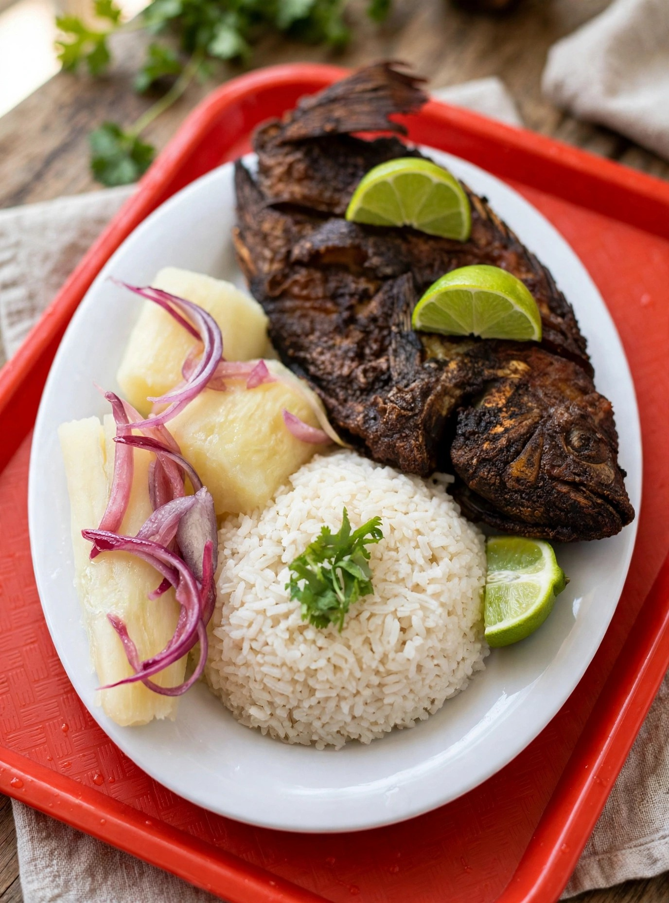
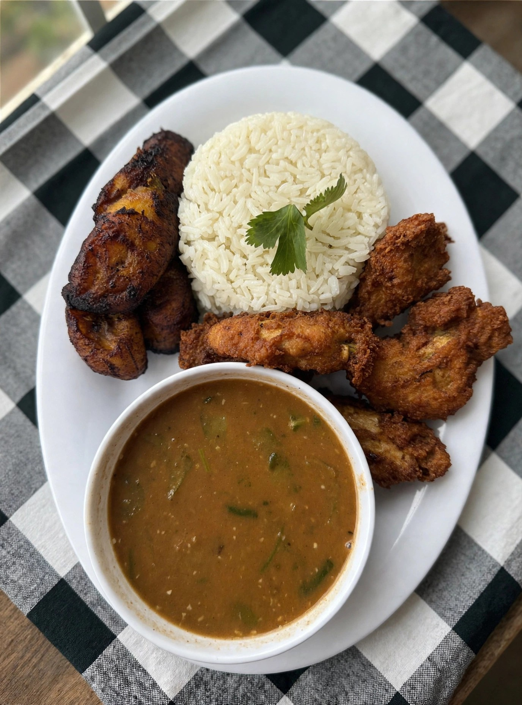
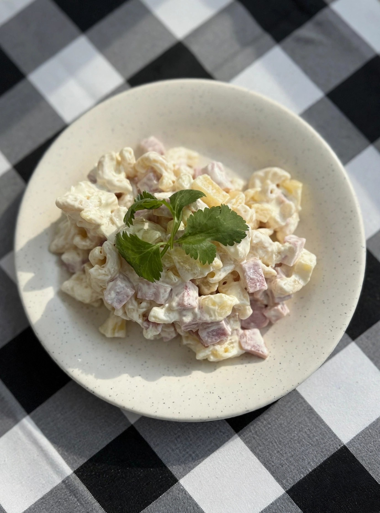
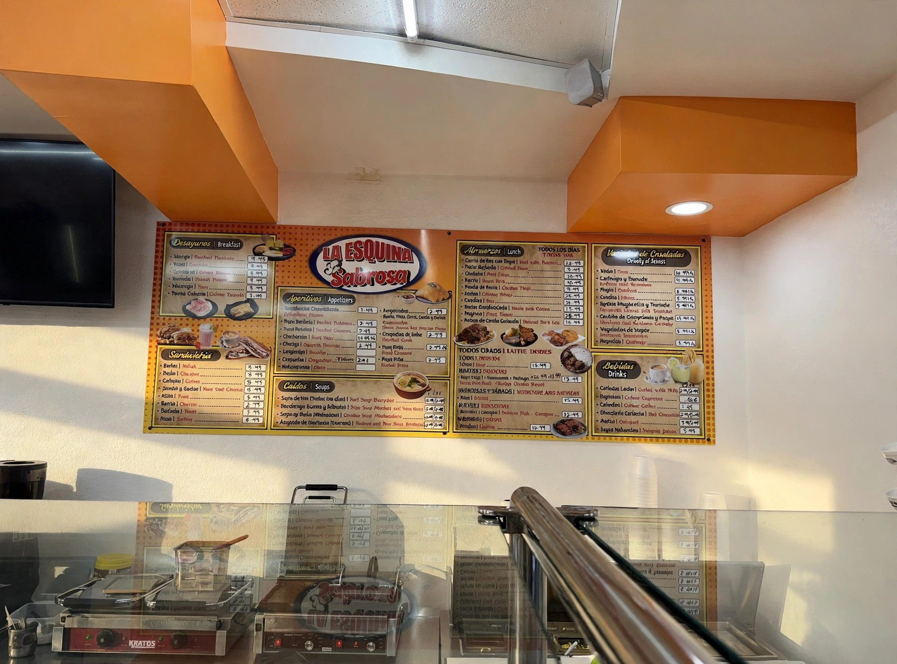

Sabor latino y caribeño, en la esquina de Waters Ave.
Comida latina y caribeña, rápida y casera, en Tampa. Los platos que más piden los clientes, sopas, mangú, pernil y café con leche.
Llámanos: (813) 931-1443 Ver el menú
Restaurantji 4.4 / 35 reseñas DoorDash 4.3 Para llevar y delivery
Muestra en borrador — no publicada. Las calificaciones son de directorios (Restaurantji y DoorDash), no de Google. Todos los precios son de delivery y están por confirmar con el dueño; no son precios de mostrador.

Nosotros
La Esquina Sabrosa es un restaurante de comida española, latina y caribeña en Tampa, en el corredor de Waters Ave. Sus clientes destacan la comida casera, las porciones y los precios razonables. Entre los platos que mencionan: arroz con habichuelas y pollo, mangú, chofán con pernil y sopas.

Sin página web propia hoy: solo aparece en directorios (Restaurantji) y en DoorDash. Esta muestra propone su primera web propia, en español e inglés.
Los más pedidos
Según DoorDash, los platos más pedidos son: Sopa de Res Grande, Tamal Cubano y Empanadas. Precios de delivery, por confirmar con el dueño.
Sopa de Res Grande
La más pedida en DoorDash. $18.99*
Tamal Cubano
2 por orden. $4.99*
Empanadas
Las favoritas de los clientes. $4.99*
Sándwich Cubano
Clásico de la casa. $12.49*
Mangú
Destacado en reseñas de clientes. $13.99*
Mofongo con churrasco
Plato fuerte. $27.99*
* Precio de delivery, por confirmar con el dueño. No es precio de mostrador.
Catering y eventos — por confirmar con el dueño
No hay menú de catering, paquetes ni mínimos verificados. No se presenta ningún precio de catering en esta muestra.
Nota de referencia, sin presentarla como servicio confirmado: el negocio aparece listado para eventos en Eventective, descrito como comida caribeña deliciosa y asequible para un próximo evento. Si el dueño confirma que ofrece catering, esta sección se completa con su menú, paquetes y mínimos reales.

Visítanos
La Esquina Sabrosa
2730 W Waters Ave, Tampa, FL 33614
Tel: (813) 931-1443
Instagram (por confirmar): @laesquinasabrosa_
Horario
Lunes a sábado: 8 AM – 8 PM
Domingo: 9 AM – 6 PM
Horario de Restaurantji, actualizado el 16 de septiembre de 2026.
